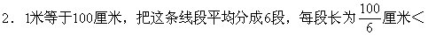
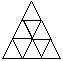

习题十二解答
1.把12所小学看作12抽屉，87名获奖学生是哪所小学的就进入相应的抽屉。
∵87＝12×7＋3，
∴根据抽屉原理，至少有8名学生来自同一所小学。

17厘米.把7个点任意放入这6段中，根据抽屉原理，至少有两个点落在同一段中.则这两个点之间的距离小于17厘米。
3.①5张； ②17张； ③40张；
④43张； ⑤14张。
4.将借书的类型A、B、C、D、AA、BB、CC、DD、AB、AC、AD、BC、BD、CD共14种看作14个抽屉.因为85=14×6＋1，所以至少有7个人所借书的类型是一样的。
5.将这30个数从某数开始按顺时针方向顺次记为a1、a2、…、a30按顺序写成以下10组：a1a2a3、a4a5a6、…、a28a29a30，这10组数的和的总和为：
a1＋a2+…＋a30＝1+2＋3＋…+30＝465＝10×46＋5。
根据抽屉原理，至少有一组数的和不小于47。
6.把正三角形的每条边都三等分并如图连结各点将这个正三角形分割成

至少有2个点落在同一个小三角形内（也可以在边上）.在同一个小正三角形